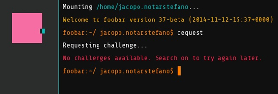

So, what was1 Google Foobar about? I still don't know. Some said it was an hiring push for Python developers. Others claimed that Google was looking for cryptanalysts. There's even someone who proposed that it was an elaborate marketing ploy for the recently released "The Imitation Game" movie.
I won't talk in this post about how to get in, or what does it look like, since excellent articles were already written about these topics. I will instead describe the problems I encountered, the techniques I used and what I learned. I will also discuss a few conjectures I have about Google Foobar.
The problems
Google Foobar currently consists of 30 problems articulated in 8 levels, where level \(i\) contains exactly \(i\) problems, except for level 8, which for now only has two. Problem difficulty does not always increase with the level: it does until level 5, then, when all the hard problems are gone, we get all the easier problems that we didn't solve before.
Since there's still people playing, I won't spoil their fun by posting the exact problem statements or their solutions. On the other hand, several problems are well-known, therefore discussing their solution should do no harm.
For example, one of these problems asks to calculate the number of integer points within a triangle, and this problem is solved in this Stackoverflow thread by rederiving Pick's Theorem for triangles.
Another problem asks how much water gets trapped in a given landscape, represented by an array of integers. This is a classical interview question, also solved on Stackoverflow.
As you might know, this problem has a solution that does 3 passes over the landscape array \(A\). If you were to implement a simpler solution that does \(\max(A)\) passes you'd discover that Google Foobar times out.
In fact, the possible input size almost invariably acted as a strong hint for the accepted time complexity. An input in the order of the millions would usually require a linear algorithm, while inputs in the order of the tens would imply some kind of brute-force or exponential algorithm.
Choosing the right algorithm and implementing it correctly were usually enough to advance to the next level. In some cases I needed a little bit of profiling: this just meant to run
$ python -m cProfile solution.pyto identify and fix the bottleneck. In most cases the problem was solved by adding a very naïve memoization cache. For example, I frequently used this method to compute the binomial coefficient \({n \choose k}\):
Sometimes this was too slow, but adding a memoization dictionary made the method fast enough. For example:
This was all that was needed to pass the vast majority of puzzles. A few puzzles required either more advanced mathematics or, in my case, a little bit of cheating.
The difficult problems
In my opinion, three problems stood out for difficulty: undercover_underground, zombit_pandemic and grid_zero.
The first two asked to calculate the number of graphs having certain properties. In both cases, an explicit formula was out of question, but the problems could be solved by finding a recursive formula and applying it (usually with a memoization dictionary).
It's interesting to note that both problems can be solved using the techniques of Analytic Combinatorics, hinting that somebody behind Foobar has an advanced mathematics background.
I almost ran out of time on the last one. It essentially asks to find the minimal number of buttons to press to turn all buttons off in a variant of the Lights out game, in which pressing a button will flip the state of all buttons in the same row and column (including itself).
I tried everything I could with this problem, as detailed in this Mathematics StackExchange question, but I only managed to implement a brute-force algorithm that solved correctly 4 out of 5 test cases.
With only a few hours left, I resorted to... unorthodox strategies. I knew that the answer to a test case was a number between 1 and 225, so I submitted fake solutions until I determined the answer to the missing test case. Then I incorporated the fake solution in the rest of my code, hoped that Foobar was using the same test cases for verify and submit... and they did.
What Google Foobar probably wasn't
Finally, here are my conjectures about Google Foobar.
An attempt to recruit cryptanalysts: Only one problem had something to do with code-breaking. Most of the other problems were standard algorithmical questions, perhaps with a little more mathematics than usual.
A marketing ploy for "The Imitation Game": While I found it remarkable that Google managed to sneak in Foobar in the trailer of a movie that some say is poised for an Academy Award, I don't think that's a reasonable explanation. The hiring push seems just much more probable.
A success: According to StackExchange, my questions were seen roughly 200 times each. From this data, I estimate that Google Foobar had in the order of the low hundreds of committed participants, who got to at least level 4/5. On the other hand, it's possible that most people stopped after level 3, when Google Foobar asks your credentials to submit them to a Google recruiter.2
I don't think anything will come out of this. I don't expect to be called by Google over Foobar — but I wouldn't mind!